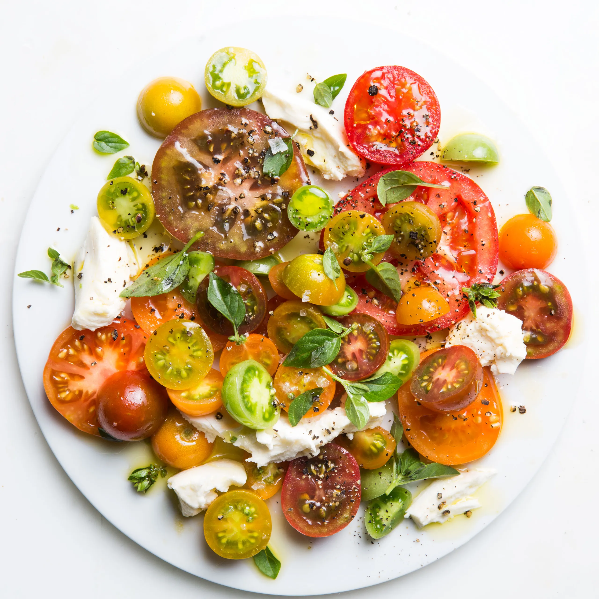

Caprese Salad
From: Bon Appetit

Ingredients
- 1 pint mixed cherry tomatoes, preferably heirloom, halved
- 7 Tbsp. (or more) extra-virgin olive oil, divided
- Flaky sea salt
- 2 pounds mixed medium and large tomatoes, preferably heirloom, cut into thin slices and/or wedges
- 8 oz. buffalo mozzarella or mozzarella, room temperature, torn into pieces
- Coarsely ground black pepper
- Small basil leaves and toasted country bread (for serving)
Instructions
- Toss 1 pint mixed cherry tomatoes, preferably heirloom, halved with 1 Tbsp. extra-virgin olive oil in a small bowl; season with flaky sea salt.
- Arrange 2 pounds mixed medium and large tomatoes, preferably heirloom, cut into thin slices and/or wedges on a serving platter, slightly overlapping; season generously with flaky sea salt. Arrange 8 oz. buffalo mozzarella or mozzarella, room temperature, torn into pieces over tomatoes; lightly season mozzarella with flaky sea salt. Spoon cherry tomatoes over salad and drizzle with 6 Tbsp. extra-virgin olive oil; season with coarsely ground black pepper. Let stand 30 minutes to let flavors meld and release juices from tomatoes and mozzarella.
- Top salad with small basil leaves and additional salt and oil, if desired. Serve with toasted country bread alongside.